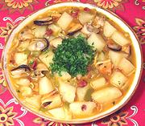

|
Mussel StewSpain - Galacia - uiso de Mejillones a la Gallega | ||||
| Serves: Effort: Sched: DoAhead: |
6 main *** 1 hr Yes |
A substantial and satisfying seafood stew modified a bit for local practicality (live mussels are scarce and expensive here, and difficult to clean). | |||
|
|
1 6 5 2 2 3 1/3 ----- 2/3 1 2 2 1 1/1 1/2 ----- |
# oz oz cl oz # c --- c c t t t --- |
Mussel Meat (1) Onion Bell Pepper, grn Garlic Chorizo (2) Potatoes (3) Olive Oil -- Broth Wine, white Clam Juice Bay Leaf Thyme sprig Paprika (4) Salt Pepper -- Garnish Parsley (flat) |
The photo example is made with giant New Zealand mussels cut in half (because they were cheaper than smaller ones that week). Prep - (30 min)
|